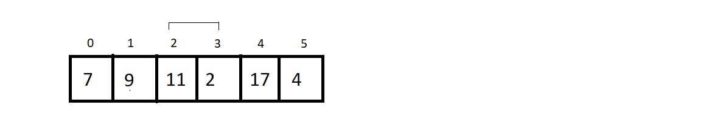
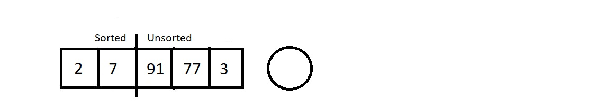
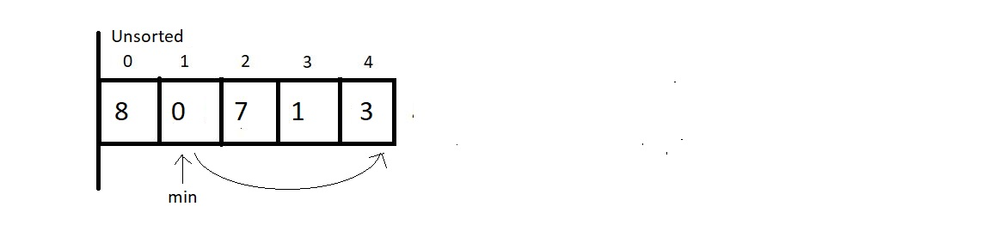

Sorting Algorithms
Introduction
What is sorting?
Sorting is a method to arrange a set of elements in either increasing or decreasing order according to some basis/relationship among the elements.
Sorting are of two types
-
Sorting In ascending order
- Arranging the elements (numbers, alphabets) from smallest to largest.
-
Sorting in descending order
- Arranging the numbers from the largest to smallest.
Need of sorting?
- In social media apps, news apps, emails or file managers to arrange things according to dates, size, latest, top-rated, prices etc. These all features use sorting
- In dictionary, the words are sorted lexicographically for you to find any word easily.
- When an array is not sorted then the time taken to find an element is O(n) but when the array is sorted then it becomes O(log N)
Criteria for analysis of sorting algorithms
how to come up with criteria for analyzing different sorting algorithms and why one differs from the other.
Time Complexity
- Time complexity decides which algorithm works efficiently for larger set of data and for smaller data sets.
- In general, the algorithmwhose time complexity is O(N log N) is considered a better than the algorithm whose time complexity is O(N 2 ), and most of our algorithms' time complexity revolves around these two.
- Note: Lesser the time complexity, the better is the algorithm.
Space complexity
-
This criteria helps us compare the space the algorithms uses to sort any data set.
- Lot of space = poor algorithm
- We might prefer a higher space complexity algorithm if it proposes expectionally low time complexity, but not in general.
-
Inplace sorting algorithm :
The algorithm which results in constant space complexity.
- Mostly uses swapping and rearranging techniques to sort a data set. Ex - bubble sort.
Stability
- The stability of an algorithm is judged by the fact whether the order of the elements having equal status when sorted on some basis is preserved or not.
-
In set of number 6, 1, 2, 7, 6.
- after sort → 1, 2, 6, 6, 7
- Does the 6s follow the same order as that given in the imput or thay have changed. That is whether the first 6 still comes before the second 6 or not.
- If they do, then the algorithm we followed is called stable, otherwise unstable.
Adaptitvity
- Algorithms that adapt to the dact that if the data are already sorted and it must take less time are called adaptive algorithms otherwise not adaptive.
Recursiveness
- If the alrotithm uses recursion to sort a data set.
Bubble sort
- bubble sort, we intend to ensure that the largest element of the segment reaches the last position at each iteration.
- It intends to sort an array using (n-1) passes where n is the array's length.
- In one pass, the largest element of the current unsorted part reaches its final position, and our unsorted part of the array reduces by 1, and the sorted part increases by 1.
- At each pass, we will iterate through the unsorted part of the array and compare every adjacent part. We move ahead if the adjacent pair is sorted otherwise, we make it sorted by swapping their positions.
- Doing this ar every pass ensures that the largest element of the unsorted part of the array reaches its final position at the end.
-
1st pass:
At first pass, our whole array comes under the unsorted part. We will start by
comparing each adjacent pair. Since our array is of length 6, we have 5 pairs to compare.
Let’s start with the first one.- Since these two are already sorted, we move ahead without making any changes.
- Now since 9 is less than 11, we swap their positions to make them sorted. 
- Again, we swap the positions of 11 and 2.
- We move ahead without changing anything since they are already sorted.
-
Here, we make a swap since 17 is greater than 4.
And this is where our first pass finishes. We should make an overview of what we received at the end of the first pass.
-
2nd Pass:
- We again start from the beginning, with a reduced unsorted part of length 5. Hence the number of comparisions would be just 4.
- No changes to make.
- Yes, here we make a swap, since 9>2.
- Since 9 < 11, we move further.
- And since 11 is greater than 4, we make a swap again. And that would be it for the second pass. Let’s see how close we have reached to the sorted array.
-
3rd Pass
- We'll again start from the beginning, and this time our unsorted part has a length of 4; hence no. of camparisons would be 3.
- Since 7 is greater than 2, we make a swap here.
- We move ahead without making any change.
-
In this final comparison, we make a swap, since 9 > 4.
And that was our third pass. And the result at the end was:

-
Array after 4th and 5th pass

-
And this is what the Bubble Sort algorithm looks like. We have a few things to conclude and few
calculations regarding the complexity of the algorithm to make.
-
Time complexity of Bubble Sort:
- Total number of comparison in above example: (5+4+3+2+1) = 15 comparisons intend to make 15 possible swaps.
- For an array of length n, we would have (n-1) + (n-2) + (n-3) + (n-4) + . . . . . + 1 comparison and possible swaps.
- the sum from 1 to n-1, which is n(n-1)/2, and hence our complexity of runtime becomes O(n^2).
- We obsered that we never made a swap when two elements of a pair becomes equal. hence the algorithm is a stable algorithm.
- Not a recursive algorithm
- If the array is already sorted still every pair will be compared. So, by default it is not adaptive but it can be made adaptive.
- It is called bubble sort because it bubbles up lighter elements to the left and stores larger elements towards the right.
-
Time complexity of Bubble Sort:
#include
void printArray(int *A, int n)
{
for (int i = 0; i < n; i++)
{
printf("%d ", A[i]);
}
printf("\n");
}
void bubbleSort(int *A, int n)
{
int temp;
int isSorted = 0;
for (int i = 0; i < n - 1; i++) // For number of pass
{
printf("Working on pass number %d\n", i + 1);
for (int j = 0; j < n - 1 - i; j++) // For comparison in each pass
{
if (A[j] > A[j + 1])
{
temp = A[j];
A[j] = A[j + 1];
A[j + 1] = temp;
}
}
}
}
void bubbleSortAdaptive(int *A, int n)
{
int temp;
int isSorted = 0;
for (int i = 0; i < n - 1; i++) // For number of pass
{
printf("Working on pass number %d\n", i + 1);
isSorted = 1;
for (int j = 0; j < n - 1 - i; j++) // For comparison in each pass
{
if (A[j] > A[j + 1])
{
temp = A[j];
A[j] = A[j + 1];
A[j + 1] = temp;
isSorted = 0;
}
}
if (isSorted)
{
return;
}
}
}
int main()
{
// int A[] = {12, 54, 65, 7, 23, 9};
int A[] = {1, 2, 5, 6, 12, 54, 625, 7, 23, 9, 987};
// int A[] = {1, 2, 3, 4, 5, 6};
int n = 11;
printArray(A, n); // Printing the array before sorting
bubbleSort(A, n); // Function to sort the array
printArray(A, n); // Printing the array before sorting
return 0;
}
Insertion Sort short explanation
-
Insert Sort Algorithm:
- An array of a single element is always sorted.
- Here we have an array of length 5 with a subarray of length 1 already sorted.
- Moving from the left to right, we will pluck the first element from the unsorted part, and insert it in the sorted subarray. This way at each insertion our sorted subarray length increases by 1.

-
Pass 1
- to insert 2 in the sorted array of length 1.
- We plucked the first element from the unsorted part. Let's insert element 2 at its correct position, which is before 7. 
-
Pass 2
- The next element we plucked out was 91. And its position in the sorted array is at the last. So that would cause zero shifting. And our array would look like this.
- Our sorted subarray now has size 3, and unsorted subarray is now of length 2. Let’s proceed to the next pass which would be to traverse in this sorted array of length 3 and insert element 77.
- started checking its best fit, and found the place next to element 7. So this time it would cause just a single shift of element 91.
-
Last pass
- Since our new element to insert is the element 3, we started checking for its position from the back. The position is, no doubt, just next to element 2. So, we shifted elements 7, 77, and 91. Those were the only three shifts. And the final sorted we received is illustrated below.
Analysis:
Conclusively, we had to have 4 passes to sort an array of length 5. And in the first pass, we had to compare the to-be inserted element with just one single element 7. So, only one comparison, and one possible swap. Similarly, for ith pass, we would have i number of comparisons, and i possible swaps.
-
1. Time complexity
- For an array of length 5 there were 4 passes and for ith pass, we made i number of comparisons. So, the total number of comparisions is 1+2+3+4.
-
Now for an array of length n
- the total number of comparison/possible swaps = 1+2+3+4+ . . . + (n-1) → n(n-1)/2, which ultimately is O(n 2 )
-
2. Stable
- As we start comparing from the back of the sorted subarray, and never cross an element equal to the to be inserted element.
-
3. adaptive
- When our array is already sorted, we just make (n-1) passes, and don’t make any actual comparison between the elements. Hence, we accomplish the job in O(n).
-
Note:
- At each pass, we get a sorted subarray at the left, but this intermediate state of the array has no real significance, unlike the bubble sort algorithm where at each pass, we get the largest element having its position fixed at the end.
#include <stdio.h>
void printArr(int arr[], int n)
{
printf("array -> ");
for (int i = 0; i < n; i++)
{
printf(" %d ", arr[i]);
}
printf("\n");
}
void insertionSort(int *arr, int n)
{
int current;
int j;
for (int i = 1; i < n; i++)
{
current = arr[i];
j = i - 1;
while (j >= 0 && arr[j] > current)
{
arr[j + 1] = arr[j];
j--;
}
arr[j + 1] = current;
}
}
int main()
{
int A[] = {12, 54, 65, 7, 23, 9};
int n = 6;
printArr(A, n);
insertionSort(A, n);
printArr(A, n);
return 0;
<
Selection Sort Lec
- At each pass, we make sure that the smallest element of the current unsorted subarray reaches its final position.
- Smallest element in the unsorted subarray is swapped with first element of unsorted array.
- We start by assuming first element of the unsorted subarray is the minimum.
- While iterating through the unsorted part of the array, and comparing every element to this element at min index.
- If the iterating element < element at min address → swap
- If length of the array is n then number of passes = n-1
Pass 1
In each pass till 5 it gets sorted
And this is why the Selection Sort algorithm got its name. We select the minimum element at each pass and give it its final position. Few conclusions before we proceed to the programming segment:
void selectionSort(int *A, int n){
int indexOfMin, temp;
printf("Running Selection sort...\n");
for (int i = 0; i < n-1; i++)
{
indexOfMin = i;
for (int j = i+1; j < n; j++)
{
if(A[j] < A[indexOfMin]){
indexOfMin = j;
}
}
// Swap A[i] and A[indexOfMin]
temp = A[i];
A[i] = A[indexOfMin];
A[indexOfMin] = temp;
}
}
- Time Complexity
- O(n2)
- Stability
- Not stable
- Since the smallest element is replaced with the first element at each pass, it may jumble up positions of equal elements very easily.
- Not recursive
- Adaptive
- Not adaptive by default
Quick Sort explaination
- We use the divide and conquer method to sort our array in pieces reducing our effort and space complexity of the algorithm.
- Divide and conquer→ divides a problem into subproblems and solves them at their levels, giving the output as a result of all these subproblems.
- Partition→ we choose an element as a pivot and try pushing all the elements smaller than the pivot element to its left and all the greater elements to its right.
Unsorted array ↓

- In quicksort algorithm, on every unsorted subarray, partition is done on it.
- Partition take first element as pivot and at end of complition place it in right position where left to it is all small element and right to it are all large.
#include
void printArray(int *A, int n)
{
for (int i = 0; i < n; i++)
{
printf("%d ", A[i]);
}
printf("\n");
}
int partition(int A[], int low, int high)
{
int pivot = A[low];
int i = low + 1;
int j = high;
int temp;
do
{
while (A[i] <= pivot)
{
i++;
}
while (A[j] > pivot)
{
j--;
}
if (i < j)
{
temp = A[i];
A[i] = A[j];
A[j] = temp;
}
} while (i < j);
// Swap A[low] and A[j]
temp = A[low];
A[low] = A[j];
A[j] = temp;
return j;
}
void quickSort(int A[], int low, int high)
{
int partitionIndex; // Index of pivot after partition
if (low < high)
{
partitionIndex = partition(A, low, high);
quickSort(A, low, partitionIndex - 1); // sort left subarray
quickSort(A, partitionIndex + 1, high); // sort right subarray
}
}
int main()
{
// int A[] = {3, 5, 2, 13, 12, 3, 2, 13, 45};
int A[] = {9, 4, 4, 8, 7, 5, 6};
// 3, 5, 2, 13, 12, 3, 2, 13, 45
// 3, 2, 2, 13i, 12, 3j, 5, 13, 45
// 3, 2, 2, 3j, 12i, 13, 5, 13, 45 --> first call to partition returns 3
int n = 9;
n = 7;
printArray(A, n);
quickSort(A, 0, n - 1);
printArray(A, n);
return 0;
}
Analysis
- Time Complexity
- worst case → when the array is already sorted
- O(n2)
- best case → when the array get divided into tow almost equal subarrays.
- O(nlogn)
- worst case → when the array is already sorted
- Stability
- Not stable
- As it does swaps of all kinds
Merge Sort
- We divide the arrays into subarrays and subarrays into more subarrays until the size of each subarray becomes 1. Since arrays with a single element are always considered sorted, this is where we merge.
Merging procedure on two different sorted arrays.
- Beside arrays A and B we need third array = C.
- Size of A = 5, size of B = 4. So, size of C = 5 + 4 (9)
- Three index variables i, j & k
- i looks after the elements of A
- j looks after the elements of B
- k looks after the elements of C
-

- Each index variable start from the first index of each arrays
- using i and j, array A and B are compared and smaller element is stored in array C
- Conditions for incrementing i,j & k
- if element A[i} < B[j]
- here C[k] is storing A[i]
- i++
- k++
- if not
- here C[k] is storing B[j]
- j++
- k++
- if element A[i} < B[j]
For merging two sorted subarrays of a single array in the array itself we modify the code
Merging single array with two sorted subarrays
- Here length of A is 5. So, length of auxiliary array B = 5
- high, low and mid is created
- high = last index of A (4)
- low = first index (0)
- mid = (high + low)/2. (2)
- The value of i,j and k is modified accordingly such that the they comply with high, low and mid
#include <stdio.h>
void printArray(int *A, int n)
{
for (int i = 0; i < n; i++)
{
printf("%d ", A[i]);
}
printf("\n");
}
void merge(int A[], int mid, int low, int high)
{
int i, j, k, B[100];
i = low;
j = mid + 1;
k = low;
while (i <= mid && j <= high)
{
if (A[i] < A[j])
{
B[k] = A[i];
i++;
k++;
}
else
{
B[k] = A[j];
j++;
k++;
}
}
while (i <= mid)
{
B[k] = A[i];
k++;
i++;
}
while (j <= high)
{
B[k] = A[j];
k++;
j++;
}
for (int i = low; i <= high; i++)
{
A[i] = B[i];
}
}
void mergeSort(int A[], int low, int high)
{
int mid;
if (low < high)
{
mid = (low + high) / 2;
mergeSort(A, low, mid);
mergeSort(A, mid + 1, high);
merge(A, mid, low, high);
}
}
int main()
{
// int A[] = {9, 14, 4, 8, 7, 5, 6};
int A[] = {9, 1, 4, 14, 4, 15, 6};
int n = 7;
printArray(A, n);
mergeSort(A, 0, 6);
printArray(A, n);
return 0;
}
Count Sort
- One of the fastest methods of all.
Learning how count sort works
Array we will sort ↓
- First the algorithm takes the largest element from the unsorted array.
- largest element is stored in interger variable max
- An array (count) is created with size = max+1
- Initialize of elements of count array as 0
- Travese through the unsorted array
- increment the value of the element in the count array by 1.
- As the size of the count array is the maximum element of unsorted array, it is ensured that each element have its own corresponding index in the count array.
- After traversal of unsorted array is completed, we'll have the count of each element in the array.
- Now traversal in count array
- when nonzero value is found fill in the resultant array the index of the non-zero element until it becomes zero by decrementing it by 1 every time the value is filled in resultant array
#include<stdio.h>
#include<limits.h>
#include<stdlib.h>
void printArray(int *A, int n)
{
for (int i = 0; i < n; i++)
{
printf("%d ", A[i]);
}
printf("\n");
}
int maximum(int A[], int n){
int max = INT_MIN;
for (int i = 0; i < n; i++)
{
if (max < A[i]){
max = A[i];
}
}
return max;
}
void countSort(int * A, int n){
int i, j;
// Find the maximum element in A
int max = maximum(A, n);
// Create the count array
int* count = (int *) malloc((max+1)*sizeof(int));
// Initialize the array elements to 0
for (i = 0; i < max+1; i++)
{
count[i] = 0;
}
// Increment the corresponding index in the count array
for (i = 0; i < n; i++)
{
count[A[i]] = count[A[i]] + 1;
}
i =0; // counter for count array
j =0; // counter for given array A
while(i<= max){
if(count[i]>0){
A[j] = i;
count[i] = count[i] - 1;
j++;
}
else{
i++;
}
}
}
int main(){
int A[] = {9, 1, 4, 14, 4, 15, 6};
int n = 7;
printArray(A, n);
countSort(A, n);
printArray(A, n);
return 0;
}